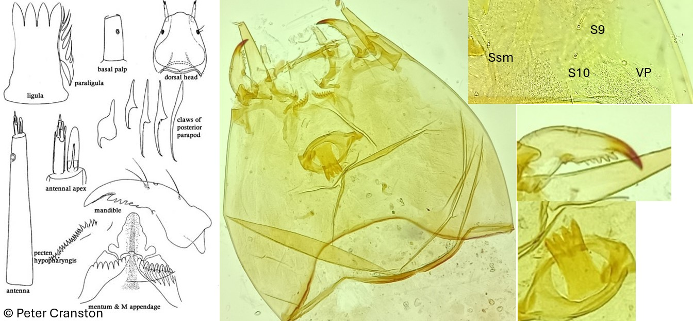

Psectrotanypus (Fabricius, 1787)

Indice Céphalique
0,95
Ratio antennaire
6.3
Mandibules
Minces, courbés vers l'intérieur. Mandibule en forme de « scie ». Nombreuses dents internes.
Tubules anaux
Tubules anaux coniques.
Procercus
4x plus long que large, avec 18-20 soies apicales.
Parapode postérieur
Quelques griffes avec des dents affaissées. Petites griffes sont simples.
Soies céphaliques ventrales
VP plus ou moins latéral de SSm. S9 antérieur à S10, tous deux plus proches de VP que de SSm (SSm, S10 et VP peuvent être alignés).
Ecologie
Les larves de Psectrotanypus sont rencontrées dans les étangs, les tourbières, les petits plans d'eau ainsi que les cours d'eau lents. Certaines espèces semblent tolérantes à la pollution.
Espèces recensées en France
1 : Psectrotanypus varius